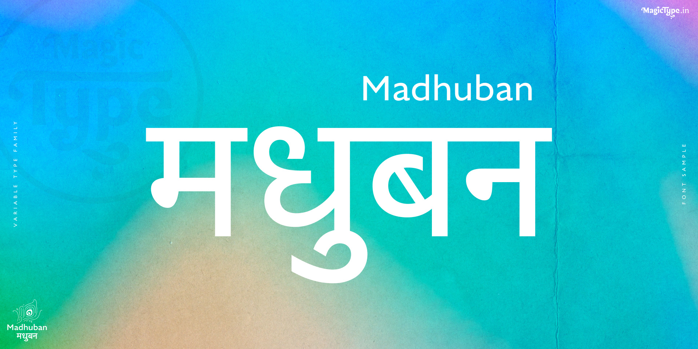
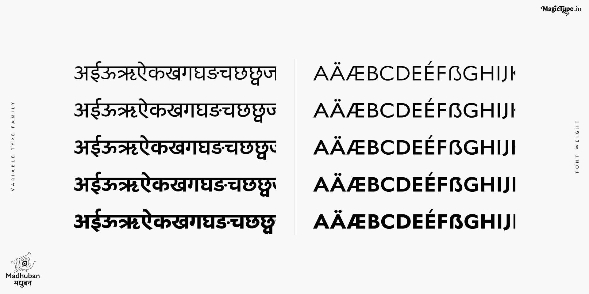
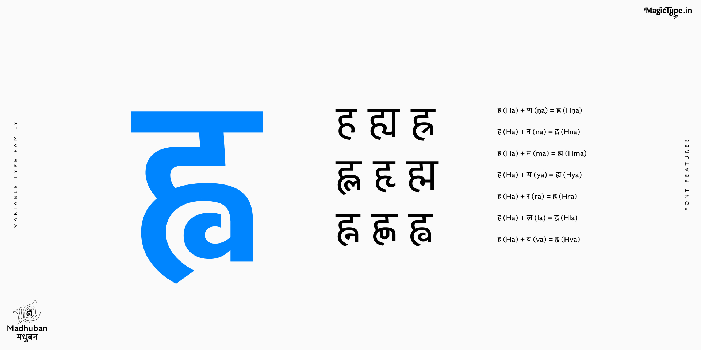
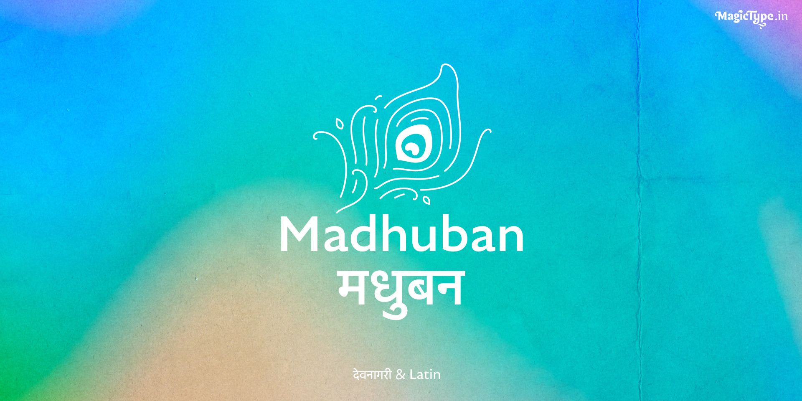
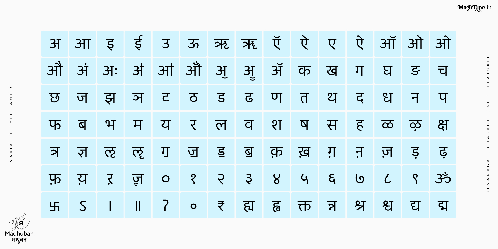
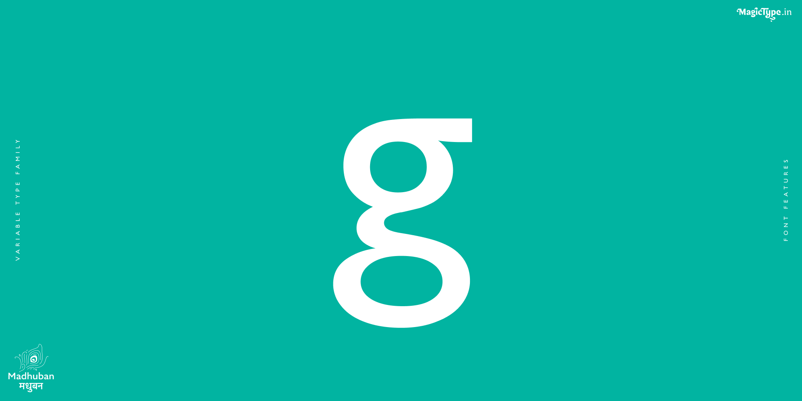
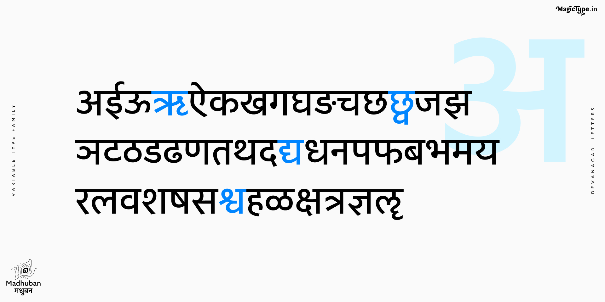

A clean, geometric humanist typeface in Devanagari and Latin. Read more about it at MagicType.
The font family has a variable weight, with 5 predefined weights; light, regular, medium, semibold, and bold. It features over 1200 precisely crafted glyphs, with standard and discretionary ligatures, Akhand and linear conjuncts for Devanagari, mathematical features, currency symbols, ordinals, fractions, accents, lining figures, tabular figures, alternative glyphs, and other OpenType features. Currently, the type family has extensive language support for over 430 languages based on Devanagari and Latin.
To contribute, see github.com/magictype/Madhuban.






